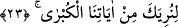
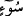

22. “Bir de elini koltuğunun altına sok ki, bir başka mûcize olmak üzere o,
kusursuz ve lekesiz beyazlıkta çıksın.”
“Bir de” sağ “elini koltuğunun altına sok ki,” yâni sağ elini koynuna sok. “İnsanın
cenâhı” insanın yan tarafı ve koltuk altına kadar pazusu demektir. Aynı şekilde ordunun
iki cenahı da her iki yanıdır. Cenah kelimesi, kuşun iki kanadından (cenâhından) istiare
ile kullanılmıştır. Çünkü kuş uçarken kanatlar onun meyletmesini sağlar. Âyetteki
ifâdenin mânâsı, elini pazunun altına koy demektir. “Bir başka mûcize olmak üzere o,
kusursuz ve lekesiz beyazlıkta” beyaz ve aydınlık bir halde “çıksın.” yani elinde ayıp
ve çirkinlik olmaksızın çıksın. “ (kusur ve leke)” kelimesi, alaca hastalığından
kinayedir. Bu kelime, avret yerinden kinâye olarak da kullanılır. Çünkü insan tabîatı
îtibariyle bunlardan nefret eder.
Rivâyete göre Mûsâ (a.s.) esmer tenliydi. Sağ elini sol koltuğunun altına sokunca
elinin güneş gibi gözleri kamaştıran bir ışık ve ufku kaplayan bir nur saçtığını gördü.
Elini geriye çekince ışığın ve parlaklığın kaybolduğunu farketti. İşte bu mûcize asâ
mûcizesinden sonra ikinci bir mûcizedir.
23. “Ta ki sana en büyük âyetlerimizden bâzılarını gösterelim.”
“Ta ki sana en büyük âyetlerimizden bâzılarını gösterelim.” Yâni, biz asâyı yılana
çevirmek, eli bembeyaz yapmak gibi şeyleri sana büyük mûcizelerimizden bazılarını
göstermek için yaptık. Bu iki mûcizeyle beraber büyük mûcizeler, dokuzdur. Nitekim
Allah Teâlâ: “Biz Mûsâ’ya apaçık dokuz mûcize verdik.” (el-İsrâ, 17/101)
buyurmuştur. Bunların açıklamaları daha önce geçmişti. Peygamber Efendimiz hakkında
da bu âyetin benzeri şu âyettir: “Andolsun O” yani Muhammed (s.a.) mi‘rac gecesinde
“Rabbinin en büyük ayetlerinden bir kısmını görmüştür.” (en-Necm, 53/18) Hz.
Mûsâ ile Peygamberimiz (s.a.)’in gördüğü mûcizeler arasında şu fark vardır: Âşikardır
ki Hz. Mûsâ’ya gösterilen mûcizeler yeryüzüyle alâkalı hayret verici şeyler iken
Peygamberimiz (a.s.) gösterilenler hem yeryüzü hem de gökyüzü ile alâkalı hayret
verici şeylerdir. Bu makamda gönlüme doğan budur. Onu bil.
Bilesin ki Mûsâ (a.s.) elini koynuna sokup, kusursuz ve lekesiz olarak bembeyaz
çıkarmıştır. Bu ise cömertlik (cûd), kerem, sehâvet ve îsârın hakîkatini
gerçekleştirdikten sonra elden sâdır olan bir kerâmetlerdendir. Cûd (cömertlik),
istenmeden önce bir şeyi vermendir. Kerem ise senin de muhtaç olduğun şeyi vermendir.
Dostluk ancak vermekle gerçekleşir.
Rivayete göre Allah Teâlâ Cebrâil (a.s.)’ı İbrahim (a.s.)’a insan şeklinde gönderdi.
Cebrâil ona: “Ey İbrahim, görüyorum ki hem dosta hem de düşmana ihsanda
bulunuyorsun.” dedi. İbrahim (a.s.): “Ben ihsanı ve vermeyi Rabbimden öğrendim.